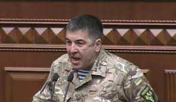

Кандидат у Президенти України Юрій Тимошенко

підтримка : 0.62%
Ю́рій Володи́мирович Тимоше́нко (3 квітня 1961, с. Дивне, Апанасенковський район, Ставропольський край) — український гвардієць. Народний депутат України 8-го скликання.